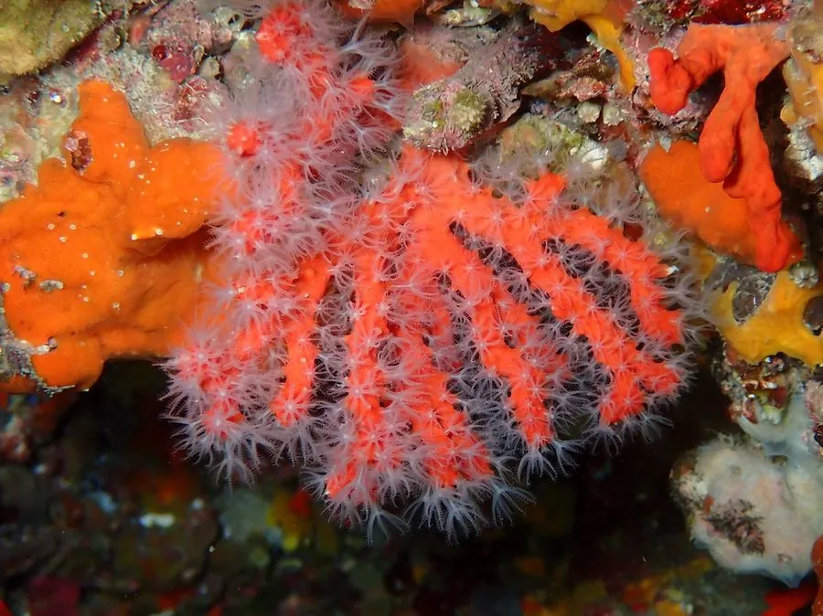

其他无脊椎动物 · 动物界
红珊瑚 Corallium rubrum

骨骼呈深红色的地中海珊瑚，生长极其缓慢，因被大量采捞制作珠宝而资源严重衰退，是中国国家一级保护动物。
- 分类
- 门刺胞动物门纲珊瑚纲目软珊瑚目科红珊瑚科属红珊瑚属
- 栖息环境
- 地中海与东大西洋的岩壁、洞穴和弱光海区，多在水深数十米处
- 地理分布
- 地中海及邻近东大西洋海域，如意大利、西班牙和北非沿岸
- 保护级别
- IUCN 濒危（EN）；中国国家一级保护野生动物
物种志
红珊瑚群体呈树状，高约 10–25 cm，中轴骨由致密的红色碳酸钙和角质构成，坚硬如石；水螅体白色半透明，展开时像一朵朵小花。主干直径每年仅增长约 0.2–0.5 mm，生长极其缓慢。
它生活在地中海和东大西洋的岩壁、洞穴与弱光海区，靠水螅体滤食浮游生物和有机碎屑。红珊瑚既能进行有性繁殖，也能靠断裂的枝条再生，性成熟需要多年。密集的红珊瑚丛为鱼、虾、蟹等提供栖息场所。由于骨骼色泽艳丽，它长期被采捞制作珠宝首饰，过度捕捞和非法贸易使资源严重衰退；1999 年地中海热浪还曾造成西北地中海红珊瑚大面积死亡。红珊瑚被列为 IUCN 濒危等级，也是中国国家一级保护野生动物。
形态与习性
- 食性滤食浮游生物和有机碎屑
- 体高群体高约 10–25 cm
- 生长主干直径每年仅增长约 0.2–0.5 mm
- 繁殖有性繁殖与断裂再生，性成熟需多年
- 生态作用形成珊瑚丛，为鱼虾提供栖身场所
- 威胁过度采捞、非法贸易和海水升温导致死亡率上升
趣味知识
- 红珊瑚的红色骨骼由碳酸钙与有机质构成，生长慢到每年不足 1 毫米。
- 它不是植物也不是石头，而是由无数水螅体组成的动物群体。
- 1999 年地中海热浪曾造成西北地中海红珊瑚大面积死亡。